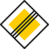
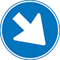

Algemeen
Bebouwde kom
 Bebouwde kom. Na dit bord mogen auto's en motoren niet sneller dan 50 km/h en bromfietsen en speed-pedelecs op een fiets- of bromfietspad niet sneller dan 30 km/h. (Op de rijbaan mag een bromfiets of speed-pedelec zowel binnen als buiten de bebouwde kom 45 km/h.)
Bebouwde kom. Na dit bord mogen auto's en motoren niet sneller dan 50 km/h en bromfietsen en speed-pedelecs op een fiets- of bromfietspad niet sneller dan 30 km/h. (Op de rijbaan mag een bromfiets of speed-pedelec zowel binnen als buiten de bebouwde kom 45 km/h.)
Voorrang
De voorrangsborden zijn door hun unieke vorm goed te herkennen, ook aan de achterkant.
- Verleen voorrang aan bestuurders op de kruisende weg.Bij dit bord moet je voorrang verlenen, maar als er niks aankomt, hoef je niet eerst te stoppen.
- Stop en verleen voorrang aan bestuurders op de kruisende weg.Bij dit bord moet je niet alleen voorrang verlenen, maar ook altijd stoppen voordat je de kruisende weg oversteekt of opdraait. Als er een stopstreep is getekend op de weg (in de dwarsrichting), moet je voor die stopstreep stoppen.
- Voorrangsweg.Aan dit bord kun je zien dat je je op een voorrangsweg bevindt. Alle andere bestuurders moeten voorrang verlenen aan bestuurders op de voorrangsweg.
- Einde voorrangsweg.
Rotonde
- Rotonde.Dit bord waarschuwt dat je een rotonde nadert.
- Rotonde, verplichte rijrichting.Dit bord staat vaak vlak bij of op een rotonde en geeft de verplichte rijrichting aan.
Weg gesloten
 Gesloten in beide richtingen voor voertuigen, ruiters en geleiders van rij- of trekdieren of vee.Je mag deze weg met geen enkel voertuig inrijden.
Gesloten in beide richtingen voor voertuigen, ruiters en geleiders van rij- of trekdieren of vee.Je mag deze weg met geen enkel voertuig inrijden.
Eenrichtingsweg
- Eenrichtingsweg, in deze richting gesloten voor voertuigen, ruiters en geleiders van rij- of trekdieren of vee.Je mag de weg niet inrijden vanaf de kant waar dit bord staat. Soms heeft dit bord een onderbord waar 'Ga terug', dat bedoeld is om te voorkomen dat bestuurders gaan spookrijden.
- Eenrichtingsweg.Je mag de weg alleen inrijden vanaf de kant waar dit bord staat. Op een onderbord kan staan dat bepaalde weggebruikers, zoals fietsers, de weg wel vanaf beide kanten mogen inrijden.
Verplichte rijrichting
- Gebod voor alle bestuurders het bord voorbij te gaan aan de zijde die de pijl aangeeft.
 Gebod tot het volgen van de rijrichting die op het bord is aangegeven.Er zijn vergelijkbare borden voor andere rijrichtingen.
Gebod tot het volgen van de rijrichting die op het bord is aangegeven.Er zijn vergelijkbare borden voor andere rijrichtingen. Gebod tot het volgen van één van de rijrichtingen die op het bord zijn aangegeven.Er zijn vergelijkbare borden voor andere rijrichtingen.
Gebod tot het volgen van één van de rijrichtingen die op het bord zijn aangegeven.Er zijn vergelijkbare borden voor andere rijrichtingen.
Doodlopende weg
- Doodlopende weg.Aan het einde van deze weg kun je niet verder rijden.